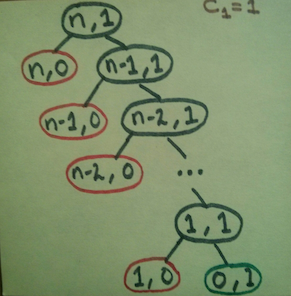

The previous examples illustrate that processes can differ considerably in the rates at which they consume computational resources. One convenient way to describe this difference is to use the notion of order of growth to obtain a gross measure of the resources required by a process as the inputs become larger.
Let $n$ be a parameter that measures the size of the problem, and let $R(n)$ be the amount of resources the process requires for a problem of size $n$. In our previous examples we took $n$ to be the number for which a given function is to be computed, but there are other possibilities. For instance, if our goal is to compute an approximation to the square root of a number, we might take $n$ to be the number of digits accuracy required. For matrix multiplication we might take $n$ to be the number of rows in the matrices. In general there are a number of properties of the problem with respect to which it will be desirable to analyze a given process. Similarly, $R(n)$ might measure the number of internal storage registers used, the number of elementary machine operations performed, and so on. In computers that do only a fixed number of operations at a time, the time required will be proportional to the number of elementary machine operations performed.
We say that $R(n)$ has order of growth
$\Theta(f(n))$, written
$R(n)=\Theta(f(n))$ (pronounced
theta of $f(n)$
), if there are
positive constants $k_1$ and
$k_2$ independent of
$n$ such that
\[
\begin{array}{lllll}
k_1\,f(n) & \leq & R(n) & \leq & k_2\,f(n)
\end{array}
\]
for any sufficiently large value of $n$.
(In other words, for large $n$,
the value $R(n)$ is sandwiched between
$k_1f(n)$ and
$k_2f(n)$.)
For instance, with the linear recursive process for computing factorial described in section 1.2.1 the number of steps grows proportionally to the input $n$. Thus, the steps required for this process grows as $\Theta(n)$. We also saw that the space required grows as $\Theta(n)$. For the iterative factorial, the number of steps is still $\Theta(n)$ but the space is $\Theta(1)$—that is, constant.[1] The tree-recursive Fibonacci computation requires $\Theta(\phi^{n})$ steps and space $\Theta(n)$, where $\phi$ is the golden ratio described in section 1.2.2.
Orders of growth provide only a crude description of the behavior of a process. For example, a process requiring $n^2$ steps and a process requiring $1000n^2$ steps and a process requiring $3n^2+10n+17$ steps all have $\Theta(n^2)$ order of growth. On the other hand, order of growth provides a useful indication of how we may expect the behavior of the process to change as we change the size of the problem. For a $\Theta(n)$ (linear) process, doubling the size will roughly double the amount of resources used. For an exponential process, each increment in problem size will multiply the resource utilization by a constant factor. In the remainder of section 1.2 we will examine two algorithms whose order of growth is logarithmic, so that doubling the problem size increases the resource requirement by a constant amount.




sufficiently smallif its magnitude is not greater than 0.1 radians.) These ideas are incorporated in the following procedures: functions:
| Original | Python |
| (define (cube x) (* x x x)) (define (p x) (- (* 3 x) (* 4 (cube x)))) (define (sine angle) (if (not (> (abs angle) 0.1)) angle (p (sine (/ angle 3.0))))) | def cube(x): return x * x * x def p(x): return 3 * x - 4 * cube(x) def sine(angle): return angle if not (abs(angle) > 0.1) else p(sine(angle / 3)) |
- How many times is the procedure function p applied when (sine 12.15) sine(12.15) is evaluated?
- What is the order of growth in space and number of steps (as a function of $a$) used by the process generated by the sine procedure function when (sine a) sine(a) is evaluated?
- The function p will call itself recursively as long as the angle value is greater than 0.1. There will be altogether 5 calls of p, with arguments 12.15, 4.05, 1.35, 0.45, 0.15 and 0.05.
- The function sine gives rise to a recursive process. In each recursive call, the angle is divided by 3 until its absolute value is smaller than 0.1. Thus the number of steps and the space required has an order of growth of $O(\log a)$. Note that the base of the logarithm is immaterial for the order of growth because the logarithms of different bases differ only by a constant factor.
machine operationswe are making the assumption that the number of machine operations needed to perform, say, a multiplication is independent of the size of the numbers to be multiplied, which is false if the numbers are sufficiently large. Similar remarks hold for the estimates of space. Like the design and description of a process, the analysis of a process can be carried out at various levels of abstraction.